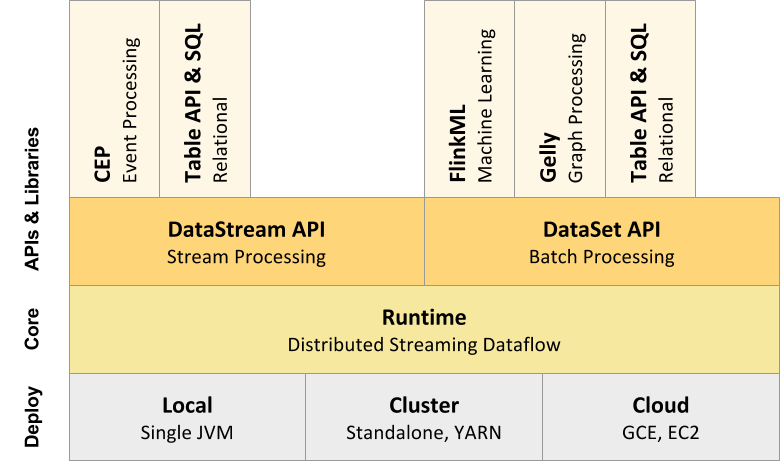
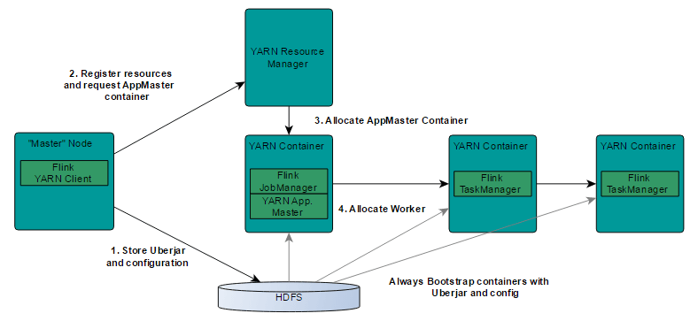

Flink 简介
Apache Flink 是分布式的数据流处理和批处理计算平台.Flink的核心是流处理.批处理则构建在流处理之上.
-
Flink作为流处理时,会把输入数据流看待成无界的.
-
批处理被看做是一种特殊的流处理,只是它的输入数据被看待成有界的.
Component Stack

Deploy层
该层主要涉及了Flink的部署模式,Flink支持多种部署模式:本地、集群（Standalone/YARN）、云（GCE/EC2）.Standalone部署模式与Spark类似.Flink on yarn 模式:

-
Flink YARN Client负责与YARN RM通信协商资源请求,Flink JobManager和Flink TaskManager分别申请到Container去运行各自的进程.
-
YARN AM与Flink JobManager在同一个Container中,这样AM可以知道Flink JobManager的地址,从而AM可以申请Container去启动Flink TaskManager.
-
待Flink成功运行在YARN集群上,Flink YARN Client就可以提交Flink Job到Flink JobManager,并进行后续的映射、调度和计算处理.